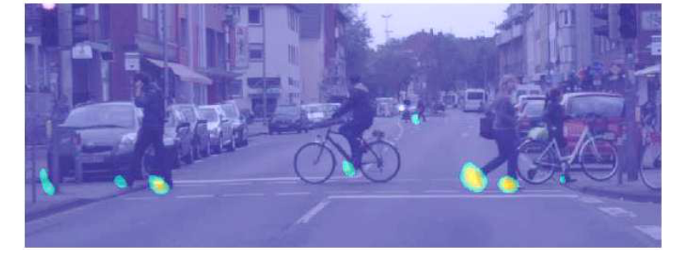
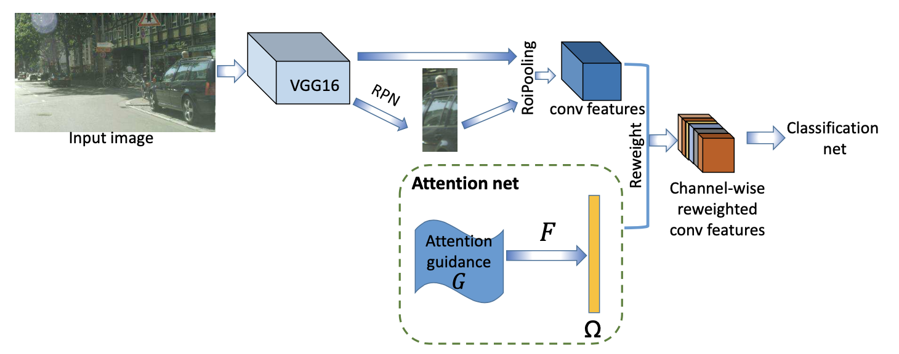
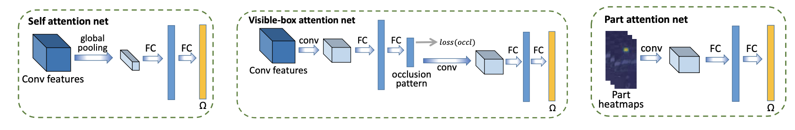

同样是解决遮挡场景的行人检测问题，同样又是attention的逻辑…但是论文中对于基于attention去做的insight还是比较有意思的。作者在做实验可视化的时候发现网络输出的feature map对于人体不同的部位分别有不同的几组channel会对其高响应，从而也就引出了论文为什么要对channel进行attention的潜在原因，论文给的示意图还是比较直接的：

方法上还是万年不变的faster rcnn框架再辅助一个attention分支（论文中示意的attention net），attention分支会出一个fc，维度和roi pooling之后的feature map channel数保持一致：

至于如何attention作者也提出了三个想法，第一个就是SE Net的做法，roi pooling之后的feature直接作为attention net的输入，参数的更新直接自学习（下图的第一个Self attention net），第二个做法是利用标注的可见框，做法比较trick，需要去统计数据集，作者统计了CityPerson数据集然后把行人框分成(1) fully visible; (2) upper body visi- ble; (3) left body visible; (4) right body visible四个pattern，然后attention net核心就是一个分类模型，在学习过程中一旦pattern被确认会用conv再抽一波特征（论文没有说清楚我猜是类似ROI Pooling去crop pattern对应部位的特征），示意图就是下图的第二个Visible-box attention net。第三个做法…emm感觉更trick了，作者直接拿来一个预训练好的skeleton模型，既然模型不同channel对不同part高响应那就干脆把高响应的heatmap作为guidance来指导模型训练，做法很直接，但是个人觉得这种做法最后去分析问题的时候是不是还得去优化skeleton模型……

然后这篇论文就没什么可以介绍的了。